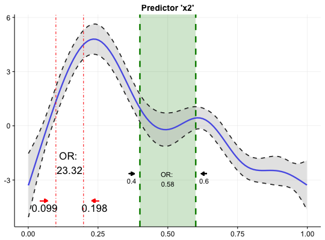

This function inserts calculated odds ratios of GAM(M)s into a plot of a GAM(M) smoothing function.
add.oddsratio.into.plot(plot.object, or.object, line.col = "red", line.size = 1.2, line.type = "solid", line.alpha = 1, text.alpha = 1, text.size = 4, text.col = "black", rect.alpha = 0.5, rect.col = NULL, rect = FALSE, arrow = TRUE, values = TRUE, values.yloc = 0, values.xloc = NULL, or.yloc = 0, arrow.length = NULL, arrow.yloc = NULL, arrow.col = NULL, arrow.xloc.r = NULL, arrow.xloc.l = NULL)
pl.smooth.gamcalc.oddsratio.gamTRUE.TRUE.Returns a ggplot plotting object
The idea behind this function is to add calculated odds ratio of
fitted GAM models (calc.oddsratio.gam) into a plot
showing the smooth function (pl.smooth.gam) of the chosen
predictor for which the odds ratio was calculated for. Multiple insertions can
be made by iteratively calling the function (see examples).
Right now the function does only accept results of
calc.oddsratio.gam with slice = FALSE.
If you want to insert multiple odds ratio you have to do it iteratively.
# load data (Source: ?mgcv::gam) and fit model library(mgcv) fit.gam <- gam(y ~ s(x0) + s(I(x1^2)) + s(x2) + offset(x3) + x4, data = data.gam) # fit model # create input objects (plot + odds ratios) library(oddsratio) plot.object <- pl.smooth.gam(fit.gam, pred = "x2", title = "Predictor 'x2'") or.object1 <- calc.oddsratio.gam(data = data.gam, model = fit.gam, pred = "x2", values = c(0.099, 0.198)) # insert first odds ratios to plot plot.object <- add.oddsratio.into.plot(plot.object, or.object1, or.yloc = 3, values.xloc = 0.04, line.size = 0.5, line.type = "dotdash", text.size = 6, values.yloc = 0.5, arrow.col = "red") # calculate second odds ratio or.object2 <- calc.oddsratio.gam(data = data.gam, model = fit.gam, pred = "x2", values = c(0.4, 0.6)) # add or.object2 into plot add.oddsratio.into.plot(plot.object, or.object2, or.yloc = 2.1, values.yloc = 2, line.col = "green4", text.col = "black", rect.col = "green4", rect.alpha = 0.2, line.alpha = 1, line.type = "dashed", arrow.xloc.r = 0.01, arrow.xloc.l = -0.01, arrow.length = 0.01, rect = TRUE)